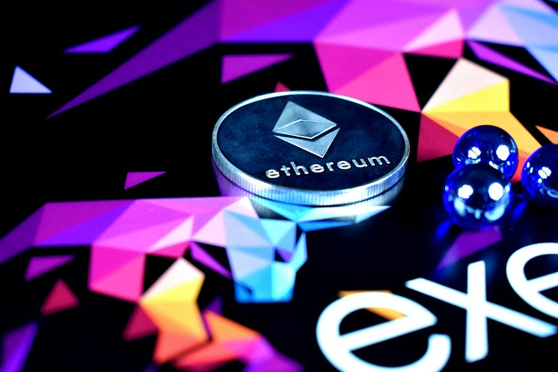

You’ve probably heard of cryptocurrency and Bitcoin. Maybe your friends have talked in the past about it and excitedly told you about how it's going to be the next big thing and your missing out if you don’t get involved.
Bitcoin is a currency whose value soared to new highs back in 2017 and more recently its had a resurgence in the markets and is now up over $11,000 in the wake of the economic downturn that has resulted from the Covid-19 pandemic.
But have you ever really considered how Bitcoin works or what it is that allows these currencies to exist?
We could be in the infancy of a technology that could have one of the biggest impacts on society and the global economy since the dawn of the digital age and the Internet.
What is Blockchain?
A blockchain is a type of distributed ledger technology (DLT) where a digital ledger records transactions across an entire network that is linked to a particular blockchain. The digital information is stored in the block and distributed across the network like a chain, in a way that it can’t be changed or hacked. A record of each transaction on the blockchain is publicly recorded to the ledger of every participant.
By recording the information in this decentralised way it ensures that a record of everyone who is participating in transactions as well as the details of these transactions are transparent to everyone and that any change made to any particular block would show across every ledger on the network that the given block had been tampered with.
It's worth noting however, just in case your wondering that the transaction details recorded are done so with identifying information being used. Instead, a unique type of encryption is used.
All of this creates an amazing level of security within blockchain networks as each block records what is known as a hash. A hash simply changes digital information into an encrypted output through a mathematical algorithm.
If any of this information is changed, you would have to change the hash of every other block on the chain to not alert everyone else, and let's be honest this is probably going to be impossible given the size of these blockchains. Just take the Bitcoin chain, it has more than 641,535 blocks within it so good luck hacking that.
1. Cryptocurrency
What is Cryptocurrency?
A cryptocurrency is a digital or virtual currency that is secured by cryptography, which makes it nearly impossible to counterfeit or double-spend. Many cryptocurrencies are decentralised networks based on blockchain technology — a distributed ledger enforced by a disparate network of computers. A defining feature of cryptocurrencies is that they are generally not issued by any central authority, rendering them theoretically immune to government interference or manipulation — Investopedia.
The very first blockchain-based cryptocurrency was Bitcoin which was developed by the still unknown Satoshi Nakamoto in 2008. This currency still remains the most popular today in an industry with a value of over $260 billion and bitcoin making up anywhere from 70% — 80% of the market share.
A recent article Cryptocurrency: Redefining the future of finance showed just how the cryptocurrency network is expanding in terms of the global recognition it's receiving, the value it holds, which is now more than $200 billion, and where this is all moving towards in the future.
The value cryptocurrency holds today is diverse. Cryptocurrency has the potential to reduce fraud, protect identity, data, give individuals more power, and ultimately greater accessibility. Cryptocurrency it should be noted is not only used for payments, but they also act as a value asset to store wealth away in the hope of crypto prices rising. Cryptocurrency like Bitcoin can act almost like a digital form of Gold.
Bitcoin in the middle of 2020 has become a popular alternative value asset and this has driven its price up to highs that have not been seen for quite a while. The current state of economies, unemployment rates in certain countries and current restrictions in place across the world due to Covid-19, the likely hood is that stocks, assets and even alternative assets like cryptocurrency will prove a strong draw to people looking to make their money work especially with interest rates at record lows. Right now It's not paying to save at the moment.
One area though which cryptocurrency is pushing towards though future is through its accessibility.
The accessibility part though of Cryptocurrencies is for me where the real value in the future lies through Decentralised Finance (DeFi). Here's a little summary of what DeFi can lead to as explained by Stan Schroeder:
The ability to borrow funds, take out loans, deposit funds into a savings account, or trade complex financial products all that without asking anyone for permission or opening an account anywhere is quickly gaining traction.
Why is this important? About 1.7 billion people in the world have no access to banking and no access to finance or any kind. Giving greater access to banking and finance will help greatly in economic development, investment opportunities and will also help the Human Development Index (HDI) of some of the poorer parts of the world.
I’m not going to go into DeFi in this article as I will be going into to this further in a future post but key takeaways from this are that blockchain, cryptocurrency, and the internet will allow individuals greater control and say in their money and investments without the need to rely on central government authorities or corporations for all their financial decisions.
2. Smart Contracts
What are smart contracts?

A smart contract is a self-executing contract with the terms of the agreement between buyer and seller being directly written into lines of code. The code and the agreements contained therein exist across a distributed, decentralised blockchain network. The code controls the execution, and transactions are trackable and irreversible — Investopedia.
The blockchain in the cases of smart contracts acts almost like the enforcing authority without the need for actual authorities, legal systems, or enforcement.
Smart contracts however are nothing new. When they were first proposed in 1994 by the American computer scientist Nick Szabo, Szabo explained that smart contracts should be computerised transaction protocols that would facilitate the terms of a contract. As it turns out a lot of his predictions came to become reality especially in terms of derivatives.
The benefits that can be drawn from Smart Contracts will likely be in faster processing time for contracts to be signed and put in place, reduced costs related to administrative procedures, expensive legal advice, or representation. As these kinds of contracts by their nature can effectively run by themselves and deliver unparalleled accuracy, we could even see payments confirmed automatically instead of this having to be checked by an individual people. This by itself may have implications in many industries but particularly in finance, accounting, or even in insurance.
Going even further than this though, with smart contract development increasing in future years we will see improvements in further autonomy, accuracy, and trust of the system.
We do however need more than just confidence in the technology for it to prove successful. I believe smart contracts future relies upon blockchain networks overcoming issues they have found in their infancy for them to unlock the future potential. This has been a defining feature of none other than the Ethereum blockchain which has struggled with scalability issues and inefficiency in processing transactions which has held it back from evolving into the blockchain that can drive forward smart contracts.
3. Digital / Decentralised ID
Digital ID is quite simply a digitised form of Identification instead of having a physical ID card, Passport, Driving licence, etc.
The idea of digital IDs is nothing new and has been around for a while with some implementation in certain areas. We’ve had the idea mooted of digital driving licences in some countries that would be on your smartphone and even here in the UK we have the GOV.UK verify, which makes it easy to access government services online by providing proof of your identity which then creates a profile for future use so you do not have to provide physical documents.
One example that a lot of people around the world are likely to be familiar with is the biometric passport or ePassport you can use at smart borders. Biometric passports don’t exist because of blockchain, the chip inside the passport contains biometric data of the individual it belongs to confirm Identity.
This is just an example of how our ID is already becoming more digitised even if we still have physical documents. Smartphones have become one of the biggest driving forces behind this digitisation given that basically everyone has one, they’re very convenient and you’re able to hold so much information on them securely.
Where blockchain could push change is through the delivery of decentralised identity management.
More than 1.1 Billion people in the world have no access to a legal form of ID. It is said that nearly half of these people live in the poorest parts of the world and there are many issues that cause this problem to exist. Corruption, bureaucracy, poverty, lack of access to government services, lack of knowledge, and even just the cost of official ID are all causes of this ID exclusion.
Now take the solution IBM is currently developing through their alpha version of their Verify Credentials solution and Microsofts white paper on their own decentralised digital identity strategy. Both of these solutions seek to empower the individual with greater control and privacy of their identity as well as develop integration into business processes for better efficiency and cost-saving methods within industries.
Microsoft's strategy overall really focuses on individual empowerment:
This self-owned identity must seamlessly integrate into our daily lives, providing complete control over what we share and with whom we share it, and — when necessary — provide the ability to take it back. Instead of granting broad consent to countless apps and services and spreading their identity data across numerous providers, individuals need a secure, encrypted digital hub where they can store their identity data and easily control access to it.
This is essentially what the blockchain technology can provide. Where I feel this will have its greatest impact will be in delivering the goals Microsoft is looking towards. Providing decentralised identity to people that they can own and is out of the control of authorities and governments, could potentially see important strides made against censorship in the world as well allowing people access to a system they were previously excluded from.
4. Supply Chain
Just as blockchain can improve ID in a digital world it can do the same for supply chains.
Think about how the way we shop has changed dramatically over the last 10–20 years. As technology has improved and companies like Amazon have become the go-to e-commerce website who have simply made buying what you want quick and easy without having to leave your home, this has given rise to the idea that blockchain can improve supply chains in terms of efficiency and trust across the entire supply journey.
As Ayman Shoukry explains:
By digitising specifications — products, packaging, formulas and so forth — companies can create a digital thread through their supply chain. This digital thread creates transparency and traceability between brands and their suppliers. Traceability is also an outcome of improved supply chain collaboration.
A fantastic example of how blockchain is already delivering this traceability and traceability is through the example given in Forbes regarding Danish Crown:
Danish Crown fielded an extensive consumer study, which found that producers capable of digitally assuring consumers of the safety and provenance of their products enjoyed increased brand recognition and greater perceived value.
With this insight in mind, Danish Crown teamed up with supply chain and consulting partners to implement a blockchain-based system that allows end-consumers to scan and verify the authenticity of a meat package in the supermarket or at home, through WeChat. The solution also provides a unique, product-level overview of food safety information that addresses primary consumer concerns related to meats in China.
Through the use of blockchain technology, Danish Crown developed a solution to deliver transparent, traceable information in a meaningful way to Chinese consumers and demonstrate the authenticity and quality of its product. This has given them a foundation to expand their other business domains.
With this in mind then, remember that transparency and traceability will definitely be important due to the impact it can have on the reputation of brands. By being able to track, identify, confirm provenance, age, and whether a product is legitimate are of course concerns consumers and authorities have.
By building blockchain into the supply network you can go even further. Companies and consumers can verify products, their locations, dates, times for delivery, quality control, and many other details that will give that improved transparency to a supply network that isn’t always as open and transparent as it may seem.
5. Deepfake & Fake News
Fake news, a popular term that has run riot throughout the internet and also in the media for a number of years now. When you think of fake news I think most people will also think of Donald Trump and his twitter account. In fact, The Washington Post’s fact-checking team stated that Trump as of July 9 has made more than “20,055 claims in 1,267 days”, which is quite astonishing.
Given that even the President of the United States can’t even be trusted to open his mouth without madness pouring out of it, it isn’t exactly reassuring in a world where we are constantly being exposed to potential false flags and misinformation.
Here in the UK recently the conversation has centred around Russian influence over the Scottish independence and Brexit votes, which as it turns out the UK government seems to have not even bothered trying to find out whether this happened or not.
Deep fakes, on the other hand, have become more sophisticated recently. A deep fake is where manipulated videos or images are produced by artificial intelligence. The result is fabricated images, sounds, or videos that appear to be real.
This really is a genuinely concerning phenomenon that has the potential to cause serious harm to human lives by simply making people believe something is real even though it's not.
In 2018 comedian Jordan Peele created a deepfake Obama video in which he was seen to insult Donald Trump. You can see the video here. Another deepfake example came in the form of a Facebook CEO Mark Zuckerberg fake video. Zuckerberg in the video states:
“Imagine this for a second: One man, with total control of billions of people’s stolen data, all their secrets, their lives, their futures,” Zuckerberg’s likeness says, in the video. “I owe it all to Spectre. Spectre showed me that whoever controls the data, controls the future.” — Vice.
Just think about the true harm in the world that can be achieved by playing on people's fears and tapping into human psychology. If people hear and see images, sounds, and videos of familiar famous or important people, it becomes extremely difficult for people to not believe what they are seeing and hearing, especially if deepfakes are perfected and used in a context and scenario that achieves maximum effectiveness.
How then can blockchain help in reduce and sorting out this modern-day mess?
Given the decentralised, transparent, and traceable nature of blockchain, it is then relatively easy to see how it can be applied and how it can work in combating this problem. As listed by Lucas Mearian in Computerworld:
By 2023, up to 30% of news and video content world-wide could be authenticated as real by blockchain — in effect, countering Deep Fake technology, according to the Gartner 2020 Predicts report released in December.
The blockchain can allow journalists, writers, news agencies, creators, and even the public to see whether a news story is genuine by verifying this against the blockchains records. This way it allows the public to check the provenance of the story and have the confidence to trust that the information has come from a trusted source.
Right now though, the artificial intelligence that helps create deepfakes can also be used to detect them as well. Bit of a double-edged sword, but at least there is a way we can detect and fight this until stronger solutions are developed.
Examples of how this technology is currently being used against fake news and deep fakes can be found at the following:
These are just a few points that I felt will be extremely important in the further development and implementation of blockchain technology. There are of course plenty of other uses that blockchain can be applied to, and there will be problems that we haven’t even thought about or discovered yet that could benefit from this technology.
As with any technology in the infancy of its implementation, it will, of course, be subject to hype and skepticism. Going forward to the future though will show just how committed industries and individuals are to blockchain technology. It will, therefore, take further development and adoption to make it successful.
Newer: Why I’m Excited For Neuralink and the potential for Symbiosis With AI
First published on Medium.